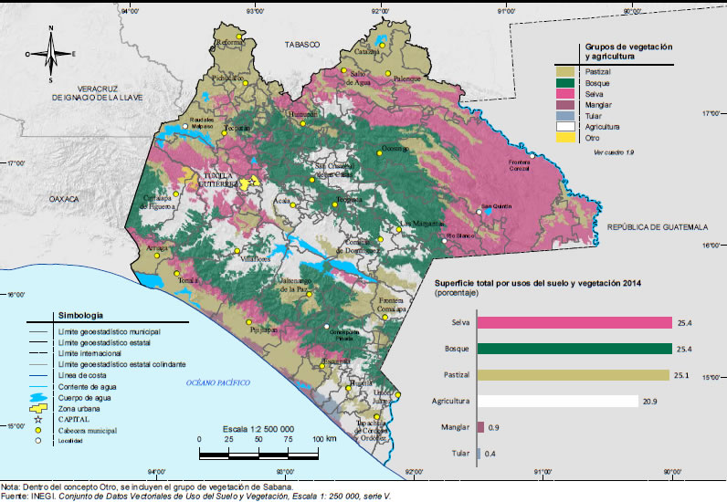
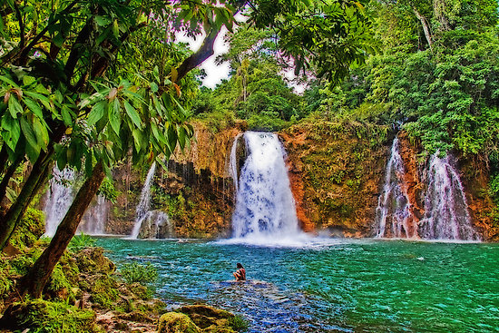

Introducción a Chiapas
Como ya se sabe, "flora" es el conjunto de plantas de un país o una región. Ahora bien, antes de iniciar con nuestro viaje en el maravilloso mundo de la flora, hablemos del estado en sí; CHIAPAS: Un estado rico en flora y fauna; la tierra del café y maíz. Chiapas se encuentra al sureste de México, colinda con el estado de Tabasco (al norte), con Veracruz y Oaxaca (al oeste) y al sur con el Océano Pacífico y este mismo con la República de Guatemala. Su principal motor son la agricultura y la minería; el coco, café y plátano son productos que se cosechan en la fértil tierra de Soconusco y sobre el maíz, pues es cosechado en casi todas partes. El estado de Chiapas tiene una vegetación impresionante, posicionándose en segundo lugar con la mayor biodiversidad de México, tomemos de ejemplo La selva lacandona; rica en vegetación y flora o la Selva Zoque, el cual, cuenta con cerca de 3,000 de especies de plantas. La vegetación que engalanan al estado, son diversas, entre las cuales encontramos los bosques templados, manglares, selvas tropicales e incluso pastizales.
Durante la época prehispánica se desarrollaron diversas civilizaciones en su territorio como la olmeca, maya y chiapaneca. Durante la Nueva España parte de la Capitanía General de Guatemala. Tras la consumación de la Independencia en 1821 la Capitanía General de Guatemala (Centroamérica) se unió al Primer Imperio pero se salió tras la desintegración de este. Chiapas se separó definitivamente de la Capitanía General de Guatemala en 1824 y formo parte de los diecinueve estados fundadores siendo formalmente constituido el 14 de septiembre del mismo año como el estado diecinueve por orden de unión a la Federación. En el territorio de Chiapas se encuentra uno de los treinta y cinco Patrimonios de la Humanidad existentes en México: el yacimiento arqueológico de Palenque; también cuenta con otros bienes culturales que son importantes atractivos turísticos como las ciudades prehispánicas de Yaxchilán, Bonampak, Chinkultic y Toniná.
En su clima presenta dos grandes regímenes climáticos: el cálido húmedo en zonas bajas, valles y mesetas de altura media y el templado húmedo en sierras altas y mesetas montañosas, principalmente en la Sierra Madre y el macizo montañoso de Los Altos. El ciclo climático incluye dos temporadas anuales principales, la temporada de lluvias (mayo-octubre) y la temporada seca (noviembre-abril). Las precipitaciones varían entre los 25 mm y los 700 mm en la temporada seca y los 700 mm y algo más de 3000 mm en la lluviosa. La depresión central y el litoral son las zonas de menor precipitación (25–1000 mm) en contraste con las regiones fronteriza y selvática, con lluvias más abundantes en ambas temporadas. |
 |
El estado de Chiapas es uno de los más biodiversos del país. Junto a la frontera con Guatemala se localiza la Selva Lacandona, que en su casi millón de ha de superficie alberga el 20% de las especies mexicanas. En el estado se encuentran cerca de 3000 especies de plantas, entre ellas cacahuate, caoba, cedro rojo, ceiba, ciprés, encino, fresno, guácimo, guapaque, laurel, mangle, mezquite, pastizales, pino, quebracho y volador.
